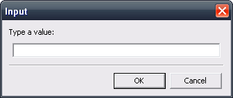

Back to the homepage | Download the application | Download with Git
Introduction to Scripted Roulette
Scripted Roulette is an original application which helps you to develop and analyze new betting strategies for the casino game 'Roulette' from a mathematical perspective.
Story
The roulette has the reputation to be easily beaten, but it is mostly an impression since the mathematical expected value is negative by design: around -2.70% for the French roulette (one zero) and -5.26% for the American roulette (two zeros) and around -8% for the Mexican roulette (three zeros). Coupled to a maximum amount per round, the roulette is by definition statistically and generally favorable to the casinos.
However, it doesn't tell that you can't win. You just need some luck and an adjusted strategy. The roulette is one of the most attractive games in the casinos thanks to the physical randomness of the wheel which avoids any computer-based controls. Its disadvantage is that the luck is local and is not equally distributed among the casinos of the same brand.
The application aims to give the player a new vision of the game and a tool to develop new strategies. It can also serve to validate the marketing arguments of some irregular websites which try to convince you that you will easily win. Don't believe them unless you know what the applicable conditions are, especially the identity of the pseudorandom number generator. Is it forged? How can we prove it?
Promises
Scripted Roulette is a pure mathematical engine which normally doesn't hinder the capability of a user to win. If you write a script with no mistake and if the current version of the software is able to process it with no bug, then you can expect to experience the roulette like never before.
The scripting language is inspired from the BASIC and Assembly languages in order to have very simple commands that can be run in loops and conditionally. By embedding several pseudorandom number generators ("PRNG") and a parser of mathematical expressions, the application can simulate your game with different levels of reliability and randomness. Finally, it can tell you if you are developing (or not) a winning strategy!
If you feel confident, you can refer to the delivered demos to reverse-engineer them and to understand rapidly the logic of the scripting language. If not, you can simply follow this documentation to learn progressively the wildest details of the application.
Example
The objective of this documentation is to give you all the clues to create simple scripts.
The following one consists in generating numbers for the roulette. For more complex examples, you have to refer to the provided demos.
.INIT
"=== Settings"
SET sys.type french
SET sys.algorithm tt800
SET user.count 50 "Number of spins"
.SEQUENCE
"=== Get the landed number"
SPIN
WRITE game.landed.number
"=== Loop"
DEC user.count
IF user.count > 0
RESTART SEQUENCE
ENDIF
Let's start and have fun!
Technical information for the developers
This section helps to understand how the application can be compiled from its sources. This section is then not relevant for final users playing with the delivered binaries of the application. You can jump to the next chapter.
Get your copy with Git
You can get the source code from the files repository at SourceForge.net but you can also use Git directly.
Git is a popular versionning tool which allow to keep a trace of the evolution of the source code (read more on Wikipedia). A server is available to get the essential files. Open Git Bash and run this command from the right folder :
git clone http://git.code.sf.net/p/scripted-roulette/code scripted-roulette-code
Tested compilers
Scripted Roulette is available on any platform supporting C++ and wxWidgets 2.8.12/3.0.x. An effort has been made to maximize the compatibility of the application with the different branches of wxWidgets and the compilers you may use.
The following table sums up the different tested configurations and which supported configurations will be used if you submit a ticket:
| OS |
Compiler |
wxWidgets |
Does it compile? |
Does it link? |
Support |
| Win |
Visual C++ 6.0 |
2.8.12 |
Yes |
Yes |
Yes |
| 3.0.0 |
Yes |
Yes |
No |
| 3.0.2 |
No |
No |
No |
| Visual C++ Community |
3.0.2 |
Yes |
Yes |
No |
| TDM MinGW 4.7.1 |
3.0.2 |
Yes |
Maybe |
No |
| Borland C++ Compiler 5.5.1 |
2.8.12 |
Yes |
Yes |
Yes |
| 3.0.2 |
No |
No |
No |
| Linux |
GCC 4.2.2 on Mandriva 2008.0 |
2.8.9 |
Yes |
Yes |
No |
| GCC 4.9.2 on Debian Jessie |
3.0.2 |
Yes |
Yes |
No |
| CLang 3.5 on Debian Jessie |
3.0.2 |
Yes |
Yes |
Yes |
| Mac |
- |
- |
Theoretically compatible if you succeed in compiling wxWidgets |
Dependencies
We assume that you first successfully compiled wxWidgets 2.8.12 or wxWidgets 3.0.2 by following the official documentation available at http://www.wxwidgets.org.
Then you have to download wxEcMath v0.6.4 (at least) in the sub-folder "src/wxEcMath". This library is not expected to be shared, but included in your projects. You can download the software online to be sure to always get the latest stable and supported version.
If you enable the option to use Scintilla (see below) in order to highlight the syntax of your upcoming scripted roulettes, then you can use the standard class wxStyledTextCtrl.
- In wxWidgets 2.8.12, you will find it in the "contrib" folder under the name "stc". You simply have to compile the project with the provided makefile and add the generated OBJ files to your project.
- In wxWidgets 3.0.x, you have to enable "wxUSE_STC=1" during the build. Then the class can be used and linked automatically.
Other external resources have been adapted in the source code directly and don't need further action. Refer to the licenses to know more about what you can do with it.
The pseudorandom number generators are optimized to be compiled with a 32-bit instruction set. However, they will mostly be used in the range starting from 0 and ending to 38.
System variables
For the document, we will name the following variables:
| Name |
Description |
| path |
The directories where you can find all your executable files to be used with command lines. It is generally redefined automatically when you install a new application. |
| wxwin |
The root directory of wxWidgets. |
| bccpath |
The root directory of Borland C++ Compiler. |
The value of each variable is represented between two percent signs.
Configuration of your project files
Scripted Roulette is not shipped with already configured workspaces as there are so many editors available on the market. This section aims to explain how to create one project.
Paths
Under Linux, most paths and makefiles are automatically provided with a shell script named "configure".
But if you are under Windows, your project must include some paths. With Visual C++, they are defined in the options. With Borland C++, you have to edit some configuration files *.CFG (refer to its installation path) stored as a plain text.
| Compiler |
Type |
Paths |
Comment |
| Visual C++ |
Include |
%wxmsw%\include |
|
| %wxmsw%\include\msvc |
|
| %wxmsw%\contrib\include |
For wxWidgets 2.8.12 |
| Source |
%wxmsw%\src |
|
| Library |
%wxmsw%\lib\vc_lib |
|
| %wxmsw%\contrib\build\stc\vc_mswu |
Choose between release or debug |
| %wxmsw%\contrib\build\stc\vc_mswud |
| Borland C++ |
bcc32.cfg |
-I"%bccpath%\include"
-I"%wxwin%\include"
-I"%wxwin%\contrib\include"
-I"%wxwin%\lib\bcc_dll\msw"
-I"%wxwin%\lib\bcc_dll\mswd"
-I"%wxwin%\lib\bcc_lib\msw"
-I"%wxwin%\lib\bcc_lib\mswd"
-L"%bccpath%\lib"
-L"%wxwin%\lib"
|
Write on a single line |
| ilink32.cfg |
-L"%bccpath%\lib"
-L"%bccpath%\Lib\PSDK"
-L"%wxwin%\lib\bcc_dll"
-L"%wxwin%\lib\bcc_lib"
|
|
-L"%wxwin%\ contrib\build\stc\bcc_msw"
-L"%wxwin%\ contrib\build\stc\bcc_mswd" |
For wxWidgets 2.8.12 |
With wxWidgets 2.8.12, to be able to link with the contributed wxStyledTextCtrl that you compiled, you have to include the OBJ files in your project. You can locate the files in the sub-folders of "%wxmsw%\contrib\build\stc". If Microsoft Visual Studio tells that there are duplicated OBJ files to link, you can remove the mentioned OBJ files from the current configuration of your project
Structure
The following tree is a suggestion to organize the project in your favorite integrated development environment (IDE):
- Scripted Roulette
- lib\
- wxEcMath (to be downloaded online)
- STC: include the OBJ files if wxStyledTextCtrl is used as a contribution in wxWidgets 2.8.12 for example (not needed for wxWidgets 3.x).
- Roulette
- include\
- defs.h
- helper.h
- history.h
- http_prng.h
- instruction.h
- random.h
- roulette.h
- sequence.h
- storage.h
- table.h
- src\
- Instructions\
- instruction.cpp
- http_prng.cpp
- random.cpp
- random_*.cpp
- roulette.cpp
- sequence.cpp
- table.cpp
- app
- drop.h
- frame.cpp
- frame.h
- main.cpp
- main_console.cpp
- main_win.cpp
- res.rc
Particular options
In case you want to compile the application to be usable from a console, you need to exclude some files in the settings of the corresponding configuration:
- frame.cpp
- frame.h
- ec_plot.cpp
- ec_plot.h
- All the objects for STC
Some files are systematically excluded from the build:
- roulette_*.cpp
- main_*.cpp
- random_*.cpp
For the files "main.cpp" and "roulette.cpp", disable the option "Enable minimal rebuild" in order that these files always get recompiled when the include files "roulette_*.cpp" are modified.
For the generation of the translations, all the files *.H and *.CPP will be considered by PoEdit. If dedicated file extensions were used, the settings of PoEdit would have been adjusted. The current files having *.INC as file extension don't contain relevant data for PoEdit.
Options for the compilation
They are available in the source file "defs.h".
| Option |
Values |
Description |
| roulette_compile_extended |
0, 1 |
When set to 1, the application includes some extended functions leading to a heavier binary file. |
| roulette_compile_pick_stc |
0, 1 |
This option activates or deactivates wxStyledTextCtrl, a text editor highlighting the syntax.
Remark: wxStyledTextCtrl is a wrapper containing quite the same interface than wxTextCtrl. However all the methods are not implemented depending on the version of wxWidgets. Scripted Roulette will adapt to both versions 2.8 and 3.0.x. |
| roulette_compile_locale |
0, 1 |
If you need the application to be translated into your local language, set the constant to 1. When you deactivate this option by setting it to 0, you then work with the basics strings of the source code (in English so). They serve later to initialize the PO files. |
GUI vs. Console
Scripted Roulette can be used in a console mode or with a user-interface. The detection is done automatically depending on the sub-system provided in the command-line at the time of the compilation.
The GUI mode (also known as "graphical user interface") is more user-friendly while the console mode is light-weight. For the console, you have to make sure that "_CONSOLE" is defined.
No response from the window in GUI mode
When you run a script which takes some time, the window may not respond and become fully white. This is caused by the design of the application.
The execution of the script occurs in the same thread than the GUI interface. When a script is busy, there is no resource to refresh the main window.
To solve this issue and to allow the user to click on the button "Stop", we must process periodically the pending message queue. This is achieved with a safe yield (wxSafeYield). However, the functions from the interface are disabled to avoid recursive calls.
This yield is implicit via some instructions:
If your script has a long loop and only one sequence, you can force the safe yield by calling "REFRESH". In return, you have to control manually its call in order that you don't reduce the performances too much.
Build
Once the above steps are performed, you can compile your project by using your usual IDE.
If you want to, you can also reuse the suggested shell scripts for GCC and BCC. You will be first invited to check them in order to set up your directories if needed.
Setup of PoEdit
If you use PoEdit to create or update some translations, you have nothing to change to its default configuration. It can be downloaded online from:
If you simply want to contribute to the translation of Scripted Roulette without installing anything, you may just edit the file "template.po" with a text editor which supports the UTF8 encoding.
The format of the PO file is presented at the following location:
Setup of the local web server
Scripted Roulette includes an interface to retrieve truly random numbers from a web-service called Random.org. Since this service contains a quota per day and an initial offered volume, if you need to make some tests with the server without impacting the remaining quota, then you have to create an unsecured local web-service.
The local script is written in PHP language. It means that you have to set up an HTTP server (Apache, nginx, lighttpd...) along with a PHP interpreter (PHP or HHVM). Please refer to the technical documentation of these products to achieve the configuration.
For now, the scripts are available in the subfolder "random_server" that you have to make available at the following location:
If you read the GPL license in your browser, then the setup is complete provided that PHP scripts can be executed.

If you need the scripts to be accessible from another location, you will have to edit the file named "random.cpp". All the occurrences of http://localhost will have to be changed. Please also note that the local HTTP service cannot be accessible if the application is compiled in release mode. This is due to the preprocessor directives.
Installing WGET
This dependency is needed if you want to get random numbers from the Internet, especially when the web-service requires a secured HTTPS connection.
This solution is assumed to be better than Curl after some tests with wxGTK.
Under Linux
You just need to install the package named "WGET".
You also need to get a support for SSL as it is the main expected feature.
Under Windows
By chance, the nice tool WGET has been ported to Windows.
To retrieve the main binary:
To get support for SSL:
- Open the same link.
- Get the ZIP file in section "Dependencies".
- Extract all the DLL files from the ZIP archive.
- Put this library in the same folder than the executable file for Scripted Roulette.
You should see something like that:
You have to get these files on your own because they are released under the terms of the GPL v3 while Scripted Roulette is released in accordance with GPL v2. The packages cannot be merged and distributed together, but both are open-source and considered as separate works.
Understand a script
Two file extensions are supported:
- .SR – Main script
- .SRI – Includes that are not expected to be processed
You cannot execute a script which is not linked to these extensions.
Structure of a script
Optionally, the script starts with a single block for the initialization. This section named ".INIT" doesn't accept all the commands. It is executed first and once when the script is launched. The main objective is to define the technical attributes of the roulette (layout, algorithm...), to initialize your variables and to display some information.
Then the script is a succession of sequences. Each section is declared with the instruction ".SEQUENCE". A sequence is independent in terms of execution of the instructions, but the variables are always global.
Knowing that each instruction is detailed in the next sections, here is a simple hello world, namely a script writing something at the user's attention.
.INIT
SET user.number = 5
.SEQUENCE
WRITE 'Hello world !'
WRITE 'You have defined this number:' user.number
When your script is becoming long, you need to write some comments. It also help to drive the visual aspect of the script.
A comment is never executed. It is activated with a quote. Everything after it is removed.
.SEQUENCE
SPIN "It spins the ball"
The comments can also be used to highlight a group of instructions:
"New script"
.SEQUENCE
"== Let's spin"
SPIN
WRITE 'You got:' game.landed.number
If you use the pretty script, you will see that the comments always end with a quote. This is not mandatory for Scripted Roulette. However, it is an important detail as shown in the next section.
A quote used in the middle of a string has no effect:
.SEQUENCE
WRITE 'This quote <"> will remain.'
Control of the syntax
The syntax is controlled on the fly during the execution of the script.
- If an instruction is wrong, a warning or an error will be displayed in the log. When the error is judged sufficiently serious, the instruction is deleted and it can't be executed anymore. This can lead to some unexpected results if you don't take care of the generated messages.
- If you use complex conditions in your script, some lines may be not executed, then not checked.
Another way is to have a visual control of the syntax thanks to the rich editor Scintilla. It is available depending on the options you have set for the compilation of the application.
If your code doesn't suit to the rules of the syntax highlighter, you can use the beautifier available in the GUI version of Scripted Roulette to perform the expected changes. Its aim is to indent the script, to put the right words in the right case, to save space and to align the comments. No control is done during the operation because each line is interpreted according to a recurrent pattern.
- To see the effect of the beautifier and to realize the time it saves, you can load the corresponding demo file and call the feature. The code will be realigned, but both versions are executable.
Executing a script
Command line
If you drop a file on the application, the script is loaded. But some other commands are available:
| Parameter |
Description |
Console |
GUI |
| -l |
It forces the locale to use within the application. Each language is assigned to an identifier. You can use ISO 3166-1 to name the countries on 2 characters.
- scripted_roulette.exe -l fr
The use of the provided locale is possible only if you already have translated the application in that language. Not all of them are available in Scripted Roulette, but you can contribute.
For some languages, you have local variants like "en_US" for the United States and "en_GB" for the Great Britain. Both are treated as "en" for English if you don't have specific localizations.
On your Linux system, you have to configure the system locale in order that don't receive an error message. Running "dpkg-reconfigure locales" may solve the point.
|
Yes |
Yes |
| -h |
It shows the available parameter you can call from the command line.
|
Yes |
Yes |
| -s |
It executes the script after it is loaded. Coupled to the use of the instruction "LEAVE", you can batch the GUI version of Scripted Roulette.
- scripted_roulette.exe –s file.sr
|
No |
Yes |
| -v |
It displays the information related to the version of the application and its embedded features.
|
Yes |
Yes |
| File(s) |
You indicate all the scripts that you have to execute at the same time. The GUI mode only supports one file at a time because there is only one instance of the program.
The extension of the file is not mandatory as the default one will be used. |
Multiple |
Unique |
GUI
When you use the visual editor, you can run the script by clicking on the button entitled "Execute". You are not forced to save your current script but it is safer if you use some instructions causing loops.
In case the program falls into an infinite loop or is long to terminate, you can use the button entitled "Stop" to end the script. This possibility is not offered all the time. Only some instructions will trigger an event allowing you to click on the button.
- Example: this code cannot be stopped.
.SEQUENCE
LABEL infinite
GOTO infinite
- Example: this code can be stopped.
.SEQUENCE
RESTART SEQUENCE
If you are not granted the right to stop at any moment, the explanation is mainly technical. Allowing it slows down the global performances. Moreover, the application is driven by only one thread.
Randomness
Algorithms
Most of the pseudorandom number generators ("PRNG") implemented in Scripted Roulette are mathematical series known for being not safe for cryptographic uses. In other words, they are basic, like the linear congruential generators. There is no external factor influencing the algorithm with quite-unpredictable random values.
Without external factors (like time, events, gestures...), it is not possible to generate a true random number. However, it is possible to implement some rules to have an acceptable randomness between 0 and 38.
Precisely, each series of numbers is composed of an initial value (also known as X0) and the next value is calculated from the previous values. It can be written: Xn+1=f(Xn) where f() is the secret algorithm which gives you an impression of randomness. In the case of the linear congruential generators, Xn+1=(a*Xn+b) modulo c where a, b and c are constants to be precisely chosen.
There is no definition of a "good algorithm" except that it is not easily predictable. In Scripted Roulette, you will find classical algorithms with a normal distribution (or not), a high volatility (or not), a high periodicity (or not), etc...
If you want to analyze the distribution of an algorithm, you can call the instruction "SHOW DISTRIBUTION".
The supported algorithms (ordered by the lowest deviation shown in a parenthesis) are described below. The proposed deviation is obtained after 500000 spins for each number of the roulette. After multiple manual runs, it is the smallest fetched value and it may vary on your own computer.
To get a better understanding of the PRNG, some embedded features of Scripted Roulette can be enabled.
- Distribution: it spins N numbers on a square, and puts all the target pixels in white whatever the frequency. It helps to determine if there are "zones".
- Hot map: it spins millions of times on a square, and the light of the target pixels is increased progressively. It helps to determine if a point is hit regularly or not.
We deduct some easy rules:
- When the hot map is the same than the distribution, it means that black areas are never a possible result.
- When the hot map is of variable gray levels, it means that the algorithm is able to target the numbers with a quite good distribution.
- When the hot map is mostly black with few white dots, the algorithm has limited capabilities.
Equal distribution - EQUI (3)
This generator is made for Scripted Roulette. It generates every number with an equal distribution after some time (very low deviation).
The function is based on exclusive-OR operations with shifted bits. However, the precise mathematical background is unknown.
Restriction: the algorithm only applies to the French roulette (37 numbers). When using other roulettes, the distribution is no more regular at all.
Distribution

Hot map
Robert Sedgewick - RS (109)
The algorithm is explained at this location:
It is a linear congruential generator having a=31415821, b=1 and c=100000000 as parameters. Its particularity is to generate every absolute numbers.
Distribution

Hot map

Computer clock - CLOCK (482)
This generator is made for Scripted Roulette. It is based on the internal timer of your processor (CPU) and uses no initial seed. Each time you do something with your computer, the counter of the processor is updated. Then the value is recomputed to provoke an integer overflow which leads to another value of the same size.
Restriction: the state of this algorithm cannot be restored to its initial value. You will always get a different value each time you call this generator. This non-reproducibility makes the algorithm harder to predict.
Distribution
Hot map

RandU - RANDU (564)
The algorithm is explained at this location:
It is a linear congruential generator having a=65539, b=0 and c=2147483648 as parameters. Its particularity is to have a reputation to be biased. This algorithm was widely used on IBM computers in the 60's.
Distribution

Hot map
XorShift - XOR (589)
The algorithm is explained at this location:
However, the implementation is a bit different compared to the page on Wikipedia:
XorShift is an algorithm where a number is transformed with an exclusive-OR with a shifted copy of itself. It is a member of the category "linear feedback shift registers". It is particularly light-weight and generates the numbers with a normal curve.
Distribution
Hot map


Rand() - RAND (618)
The algorithm is implemented by your C++ compiler. It is a linear congruential generator. It works with the parameters defined by the compiler you use to compile this application:
Restriction: the state of this generator cannot be restored to its initial value because it uses the internal C++ library.
Restriction: the algorithm is global to the application. Calling it for several objects doesn't guarantee an individual sequence for each object.
Distribution

Hot map


TT800 - TT800 (633)
Some documentation exists to understand better how it works:
This algorithm is a variant of the generalized feedback shift registers. Its particularity is that TT800 is a similar version to Mersenne-Twister having a period of 2800 while Mersenne-Twister has a period of 219937-1.
Restriction: a specific license applies to the algorithm.
Distribution

Hot map
Natural logarithm - LNGEN (646)
This algorithm is made for Scripted Roulette. It is based on the irrationality of some numbers and functions. The decimal part is used to generate an integer value from 0 to 2349088560 (=39!/33!). The integer part is never disclosed.
Generally, the logarithm is slower to generate.
Distribution
Hot map


Standard Minimal - STDMIN (656)
The algorithm is explained at this location:
It is a linear congruential generator having a=16807, b=0 and c=2147483647 as parameters. Its particularity is to have the parameters chosen to be the most suitable combinations among all the possible ones.
Distribution
Hot map
Mersenne-Twister - MT (692)
This algorithm is a variant of the generalized feedback shift registers. Mersenne-Twister is a multi-dimensional generator of random numbers aiming to solve the known flaws in the other algorithms. However it is not cryptographically secure. It generates numbers with a normal curve. The period of the algorithm is so long (219937-1) that you will never get the same sequence.
Restriction: a specific license applies to the algorithm.
Distribution
Hot map


Bit generator - BITS (9955)
This generator is made for Scripted Roulette and is inspired from the information available at:
As random number generators can work at the level of a bit, the concept is to launch it several times to get a number. The particularity is that the output has a high deviation.
Restriction: this generator doesn't generate big numbers.
Distribution

Hot map

Loaded algorithm - LOADED (30924)
This generator is made for Scripted Roulette and is inspired from the information available at:
The algorithm XorShift128+ works on 64 bits. By changing the code (64 is simply replaced by 32), we get an algorithm with side effects. Especially, the deviation is very high. This can be used to play with an approximate roulette.
Distribution
Hot map
LocalHost - HTTP_LOCAL
This algorithm is only available when the application is compiled with the debugging features. In other words, all the final users will never use it.
After you completed the setup of your local server, you can access it in the same way you would do it with Random.org in another section. Its interest is the ability to develop a client for any remote service without impacting it with incorrect HTTP requests and by saving your daily quota.
For your information, the local server is written in PHP which means that the algorithm is equivalent to RAND.
Random.org - HTTP_RANDOM_ORG
Random.org is an online service which is able to generate random numbers by using some special built-in algorithms. They are assumed to be more efficient than the other simple algorithms detailed above.
Restriction: by using the service, you consent to be bound by the terms of service. A quota is effective (read below).
Restriction: you can't use a proxy server because a direct connection is needed.
Scripted Roulette is not affiliated with the company Randomness and Integrity Services Ltd. The implementation of the client is based on the documentation provided by www.random.org. As the license LGPL v3 is not compatible with GPL v2, the suggested client on the website has not been chosen. A new client based on wxWidgets has rather been developed. To configure it, you have several options that you can enable when the application is compiled. Refer to file "defs.h":
| Name |
Value |
Description |
| roulette_http_default_number |
1 |
The default number returned when no number has been fetched online. |
| roulette_http_lot_size |
1000 |
Tells how many numbers are fetched for each HTTP request. The number can be up to 1000 according to the online documentation. As the terms of service requires to reduce the number of connections as much as possible, so you must use the highest value. |
| roulette_http_delay |
5 |
When an attempt to get some numbers has failed, no retry will happen during the next X minutes. You have to fix your connection which doesn't work behind a proxy. To reset this timeout, you have to wait or to restart Scripted Roulette. |
To prevent the exhaustion of your quota and the overload of the server, it is not possible to make a statistical analysis of this online server by using some specials functions like "SHOW DISTRIBUTION" or "SAVE HOTMAP".
According to the service, you are granted of quota of 1 million bits, refilled by 200000 every day (or more if the service is able to support it). The control is done based on your IP address. The implementation takes an average of 12 bits per landed number, so it represents around a quota of 17000 numbers per day. Be careful when you write your scripted roulettes!
Distribution
This bitmap has been generated online:

Custom generator - CUSTOM
This generator is waiting for you to be written... You simply have to implement the method wxRouletteRandom::GetCustom() available in the file "random.h".
Scripting
Define a variable
A variable is an object having a name and which is able to store an integer or a floating-point number. Technically, a value is always saved as a floating-point number because it is the most generic case. When you call it as an integer, the value is truncated (not rounded to the nearest value).
A variable is always named according to a naming convention: "domain.name"
- The domain groups the variables and controls the updates.
- The name is a name that can be given freely to identify some data.
- It is possible to have sub-names (like "user.loop.key1").
The variables can be defined by the user for the requirements of the script, but they can also be generated by some instructions, especially the one which spins the ball or makes statistics.
System variables
A system variable has to be understood at the level of the application, not of the operating system (Windows, Linux...).
A system variable typically defines immutable values or connects to the special settings of the roulette. For that reason, their creation, modification and deletion is strictly controlled. The domain is equal to "sys".
The easily accessible variables are the following:
| sys.console |
If the script is executed in a console, then the value is equal to 1, else to 0. Some instructions don't react identically in the console or GUI mode. For example, in the official demo files, you may want to "PAUSE" the script before it leaves the console. |
| sys.debug |
The value of this variable depends on the application you are using.
The official version of the application is compiled in "release" mode which means that it is highly optimized for speed and supposed to be fully functional. However, Scripted Roulette can also be compiled in "debug" mode to include extra information.
The variable is mostly used to condition the call to the instruction "DEBUG" which is restricted to the developers. In release mode, the instruction generates a warning that you can turn off.
|
| sys.double_zero |
It is the internal representation of the number "00" used in the American roulette. It cannot be stored as a classical zero, so the value is normally 37. |
| sys.false |
Boolean expressions are converted into numerical expressions and the classical "false" is equal to 0. |
| sys.game.can_bet |
If you have sufficient funds, you are allowed to bet if the value is equal to 1, else it is equal to 0.
- Remark: the check is done by considering only one bet. If you bet two numbers at the same time, the second bet can lead to a credit. Refer to the details of "BET" and "CBET" in another section of the document.
|
| sys.game.stake |
The value represents how much you spent for the current round. The value is incremented after you call the instructions "BET" or "CLEAR" for example |
| sys.game.numbers |
It tells how many numbers are on the table. For example, the French roulette has 37 possible numbers from 0 to 36. |
| sys.game.number.min |
It stores the value of the lowest number on which you can bet. |
| sys.game.number.max |
It stores the value of the highest number on which you can bet. |
| sys.input |
Some instructions will return their result in this variable. |
| sys.last_if |
This variable contains the result of the last executed conditional statement. |
| sys.plot |
It defines if a value has to be added on the plot after a call to the instruction "SPIN". The change of the variable can be done with the instruction "PLOT" only. |
| sys.random |
It contains the random number generated by the instruction "RANDOM". |
| sys.result |
Some instructions will return their result in this variable. |
| sys.triple_zero |
It is the internal representation of the number "000" used in the Mexican roulette. It cannot be stored as a classical zero, so the value is normally 38. |
| sys.true |
Boolean expressions are converted into numerical expressions and the classical "true" is equal to 1. |
| sys.version |
The version of the application is codified like "vA.B.C". The variable stores the version as an integer "ABC". For example, version 0.1.0 has the value 10. A future version v2.1 will correspond to the value 210.
- Remark: the version can help to test the availability of new instruction sets. However, since the users are always invited to use the latest version only, this should be useless most of the time.
|
| sys.zero |
It is the internal representation of the number "0" of all unbalanced roulettes (French, American and Mexican). |
Some system variables are virtual and serve to define the settings of the roulette. This can be done in section ".INIT" only.
| sys.type |
It defines the layout of the roulette. The accepted value are strings:
- French = it uses the French layout with 1 zero.
- American = it uses the American layout with 2 zeros.
- Mexican = it uses the American layout with 3 zeros.
- Balanced French = French layout with no zero.
- Balanced American = American layout with no zero.
- Balanced Mexican = Mexican layout with no zero.
.INIT
SET sys.type French
To view the exact layout, you can call "SHOW LAYOUT".
|
| sys.algorithm |
It defines the pseudo-random number generator to be used. The list is given is this paragraph.
The variable is never stored as a value. When you write the following, the algorithm is selected and the variable is dropped:
.SEQUENCE
SET sys.algorithm equi
|
Variables for the money
In terms of money, the roulette communicates with you through the variables having "game" as a domain. You will find:
| game.bet |
At any time, you can set the amount of 1 counter. It is used each time you call the instruction BET or CBET.
- Warning: with bets paying 1 to 2 (like 2 dozens or 2 columns), the bet will be doubled in order that the casino can pay you back a full counter (not a half one).
Editing this variable doesn't change the amount of money you have or the credit you contracted.
|
| game.gain |
This variable is defined after a spin. It tells the amount of money you just earned or lost. If you engaged no money, the gain is null.
- Example: you have 20€ of cash and you bet 10€ on 21 and 30. Finally, the number 30 is landed. Your gain is equal to -10 + 35 * 10 = 340. Then you increase the gain to the initial money. If the gain is negative, you will mechanically lose some cash and a credit may arise.
To check if you won during the last spin, do not check if the variable is strictly positive. Indeed, if you have a credit line, the gain will reimburse the credit first before it is delivered. So please use "game.landed.win" instead.
|
| game.cash |
The amount of money is initially defined to represent how much you paid the casino to get some counters (this number being equal to "game.cash/game.bet"). Then along the game, it shows how much money you own physically. The fluctuation can be positive or negative.
When you run out of cash, you can buy new counters with instruction "BUY".
|
| game.credit |
In Scripted Roulette, you can bet more than you paid to the casino. However, any bet with counters that you never bought will increase your credit line in this variable.
If you win some money after a spin, the credit will be reimbursed first.
- Remark: contracting a credit is theoretically a risky way of playing.
The net performance of your cash is given by the sum of the current cash minus the credit line.
|
User's variables
The user has a domain to define his own variables, named "user". The name is free provided that it contains only authorized characters.
The use of custom variables is needed for loops, conditional statements or to store a value reused later.
If you want to make sure you have saved correctly a variable, you can use the following code or to read the memory directly from the user-interface in GUI mode:
.SEQUENCE
SET user.test = 5
SHOW MEMORY
Some special names in Unicode are normally supported, but not all the characters of the ASCII table (from 0 to 255).
Landed numbers
In the game, you bet and you spin. Then the result is provided through the domain "game.landed". You can disclose all the variables by running this code:
.INIT
SET game.cash = 100
.SEQUENCE
BET straight 9 "Pick a number of your choice"
SPIN
SHOW MEMORY
| game.landed.black |
It is equal to 1 if the landed number is black. |
| game.landed.column |
It tells to which column the landed number belongs to:
- 0 for the zeros.
- 1 for 1-34.
- 2 for 2-35.
- 3 for 3-36.
|
| game.landed.dozen |
It tells which dozen a landed number belongs to:
- 0 for the zeros.
- 1 for 1-12.
- 2 for 13-24.
- 3 for 25-36.
|
| game.landed.even |
It is equal to 1 if the landed number is even. |
| game.landed.green |
It is equal to 1 if the landed number is green. In other words, if it is "0", "00" or "000". |
| game.landed.half |
It tells to which half part of the table a landed number belongs to:
- 0 for the zeros.
- 1 for 1-18.
- 2 for 19-36.
|
| game.landed.street |
It tells to which line of 3 numbers a landed number belongs to:
- 0 for the zeros.
- 1 for 1-3.
- 2 for 4-6.
- etc...
|
| game.landed.number |
It is the value of the landed number. |
| game.landed.odd |
It is equal to 1 if the landed number is odd. |
| game.landed.red |
It is equal to 1 if the landed number is red. |
| game.landed.win |
It is equal to 1 if you have bet on the landed number.
- Remark: it is safer to use this variable instead of checking if "game.gain" is strictly positive.
|
| game.landed.zero |
When the value is 0, the landed number is not a zero. Else you get a number corresponding to the number of zeros:
- 1 for "0".
- 2 for "00".
- 3 for "000".
|
To test if the landed number was a zero, two conditions are available. Pick one of both:
.SEQUENCE
IF game.landed.green OR game.landed.zero > 0
WRITE 'Green / Zeros !'
ENDIF
Statistics
During the game, some statistics can be generated. The easiest way to determine them is to call the instruction "STAT". It will then propose to you the following variables:
stat.green
stat.black
stat.red |
The values are the occurrence of each color as a percentage stored as a float-point number between 0 and 1.
- Remark: the PRNG is reliable if the frequency of the green color tends to the expected value of the game ("house edge").
|
stat.cold1
stat.cold2
stat.cold3
stat.cold4
stat.cold5
stat.hot1
stat.hot2
stat.hot3
stat.hot4
stat.hot5 |
These variables contain the least and most popular landed numbers. They are determined with the history of the spin.
In case a number never landed, it cannot be stored in one of these variables. It means that you have to spin at least 36, 37 or 38 times before you get reliable numbers.
The existence of each variable can be checked with the instruction "EXIST".
|
stat.net.min
stat.net.max
stat.net.average |
The net result includes the current cash and the credit line. The minimum and maximum amount of your money is determined based on the history. The average is calculated by summing all the values and by dividing by the number of spins for which you engaged some money. |
stat.win.count
stat.loss.count
stat.win.rate |
These variables are automatically calculated by instruction SPIN. It counts the number of times you won or lost during the game.
The winning rate is equal to "win/(win+loss)" and is stored as a floating-point value between 0 and 1. |
Define a condition
In conditions, we use the Boolean logic. As there is no Boolean format, only numbers are used: "sys.true" is equal to 1, and "sys.false" is equal to 0.
Syntax
A condition is given by the instructions IF...ELSE...ENDIF written on dedicated lines.
.SEQUENCE
IF (statement)
WRITE 'True case'
ELSE
WRITE 'False case'
ENDIF
If the statement is true, the first block is processed. Else, the second block is processed.
The block "ELSE" is optional:
.SEQUENCE
IF (statement)
WRITE 'True case'
ENDIF
The conditions can be imbricated like Russian dolls. In such an example, we understand why indenting the script is important for its understanding.
.SEQUENCE
IF (statement 1)
WRITE 'The first condition is true'
IF (statement 2)
WRITE 'The second condition is true'
ELSE
WRITE 'The second condition is false'
ENDIF
ENDIF
Statement
A statement is composed of a left part, a right part and a sign.
IF game.landed.half = 2
IF game.landed.zero > 0
IF game.landed.red
IF game.landed.number != user.magic_number
IF NOT game.landed.green AND game.landed.red
The logical signs are:
| = |
Equal |
| == |
| != |
Different |
| <> |
| < |
Less than |
| <= |
Less than or equal |
| =< |
| > |
Greater than |
| >= |
Greater than or equal |
| => |
The statements can be combined by using operators:
- AND returns true if the two statements are true.
| |
True |
False |
| True |
1 |
0 |
| False |
0 |
0 |
- OR returns true if one of the two statements is true.
| |
True |
False |
| True |
1 |
1 |
| False |
1 |
0 |
- XOR returns true if only one of the two statements is true.
| |
True |
False |
| True |
0 |
1 |
| False |
1 |
0 |
- NAND returns true when one of the two statements is false.
| |
True |
False |
| True |
0 |
1 |
| False |
1 |
1 |
- NOR returns true when the two statements are both false.
| |
True |
False |
| True |
0 |
0 |
| False |
0 |
1 |
If the right part of the expression is missing, it is assumed to be equal to "sys.true". The following conditions have the same effects:
IF game.landed.red
IF game.landed.red = 1
IF game.landed.red = sys.true
IF game.landed.red = NOT sys.false
Priorities
VERY IMPORTANT: The priorities in the logical expressions are NOT considered.
The expressions are processed from the left to the right like the simplest calculators. To support complex conditions, you have to use coding tricks or standard Boolean transforms to simplify the expression.
| Expression |
Corresponding script |
| A and ( B or C ) |
IF B or C and A
"..."
ENDIF
|
| A or (B and C) |
IF B and C or A
"..."
ENDIF
|
| NOT ( A or B ) |
IF A nor B
"..."
ENDIF
|
IF NOT A and NOT B
"..."
ENDIF
|
| NOT ( A and B ) |
IF A nand B
"..."
ENDIF
|
| NOT ( A and ( B or C ) ) |
IF B or C nand A
"..."
ENDIF
|
| ( A or B ) and ( C or D ) |
IF C or D
ENDIF
IF A or B and sys.last_if
"..."
ENDIF
|
IF A or B
IF C or D
"..."
ENDIF
ENDIF
|
| ( A and B ) or ( C and D ) |
IF A and B
GOTO condition
ENDIF
IF C and D
LABEL condition
"..."
ENDIF
|
Recall the last condition
The result of the last condition can be fetched in the variable "sys.last_if". It is necessarily equal to "sys.true" or "sys.false".
Apply NOT on a Boolean variable
If you want the value of a variable to become "sys.true" when it is equal to "sys.false", and reciprocally, you can write this long syntax:
.SEQUENCE
IF user.bool
user.bool = sys.false
ELSE
user.bool = sys.true
ENDIF
You cannot write the following instruction because "NOT" is interpreted like a variable with no domain. The mathematical parser doesn't support logical operators in such conditions:
.SEQUENCE
SET user.bool = NOT user.bool "It doesn't work"
The solution is to call "NOT" as a function thanks to parenthesis. It makes a decisive difference because it is now an expression:
.SEQUENCE
SET user.bool = not(user.bool)
Or you can simply use this mathematical property:
.SEQUENCE
user.bool = 1 – user.bool
Define a loop
There is no dedicated instruction "LOOP" to execute some instructions several times.
The best solution is to use a counter along with the instructions "GOTO" and "LABEL" which are dedicated to jump.
.SEQUENCE
SET user.loop 50
LABEL loop
"Do something..."
DEC user.loop
IF user.loop > 0
GOTO loop
ENDIF
In case you have to imbricate loops, just use another counter and another label.
.SEQUENCE
SET user.loop_one 50
LABEL loop_one
SET user.loop_two 10
LABEL loop_two
"Do something 500 times"
DEC user.loop_two
IF user.loop_two > 0
GOTO loop_two
ENDIF
DEC user.loop_one
IF user.loop_one > 0
GOTO loop_one
ENDIF
If you need to restart a loop inside the loop, you can directly change the value of the counter. But beware of the infinite loops which are not monitored. If you fall into this situation, Scripted Roulette will never stop, so you will have to kill the process with the process monitor of your operating system.
Hide the generated warnings
For some commands, the application is able to generate warnings.
To ignore them, you have to add "@" before the instruction.
.INIT
SET sys.type balanced mexican
@SET sys.type balanced mexican
Some messages cannot be avoided, like most of the encountered errors.
Use mathematical expressions
Scripted Roulette includes a parser of mathematical expressions. All the classical operations are supported.
At any moment a variable needs to be converted into a number or when you need to calculate, the mathematical engine is called. You then have to respect the standard mathematical rules: priorities, signs...
The sole thing that you can't do to implying a logical operator or a complex number in an expression.
List of the functions
The extended list of the supported functions can be found online:
The little thing to know is the naming convention of the logarithm. Indeed log is in base 10 while ln is in base e.
- log(exp(1)) is not equal to 1
- ln(exp(1)) = 1
You cannot use complex numbers.
Format the numbers
As said previously, all the numbers are stored as floating-point values. However, you will mostly use them as integers.
The translation is always implicit. With the instructions dedicated to display some text ("WRITE", "STATUS"...), you have to force the value if you need the decimals by using the key "f:".
.SEQUENCE
SET user.value = 8.5
WRITE 'Integer:' user.value
WRITE 'Float:' f:user.value
You can refer to the sample "function_decimals.sr" for another example.
The use of this flag is required when you make some final statistics: display of percentages, etc...
Index of the available instructions
ASSERT
Characteristics:
- Introduction in 0.1.
- Supported in GUI and Console.
- 1 composite argument.
An assertion is a logical expression which is expected to be always true. The arguments are evaluated and if the result is false, then the execution of the script is stopped (see the instruction "STOP").
The logical expression must be written in conformance with the recommendations of the instruction "IF".
This instruction is in fact a macro which implicitly generates the following code:
.SEQUENCE
IF (statement)
ENDIF
IF NOT sys.last_if
STOP
ENDIF
Consequently, you can't rely on the value of "sys.last_if" after a call to the instruction "ASSERT".
BEEP
Characteristics:
- Introduction in 0.1.
- Supported in GUI and Console, but not for a Linux console.
- No argument.
This instruction activates the loudspeaker of your computer or produces a sound as defined by your operating system.
Its use is recommended to warn the user for an event occurring after a long time the script is running.
It is recommended that you don't call this instruction too often because the sound is generally not synchronous.
The instructions generating popup windows typically generate built-in beeps along with the displayed message. Thus, if the time is too short between the last call to "BEEP" and the display of the popup window, you will hear no difference.
BET
Characteristics:
- Introduction in version 0.1.
- Supported in GUI and Console.
- 1 argument or more.
Behavior
This instruction is one of the most important because it validates the bets for the roulette. Its behavior is influenced by the following variables:
- The amount of the bet is given by "game.bet". But if the target pays 1 to 2, then the bet will be doubled to avoid partial counters.
- The ability to bet is given by "sys.can_bet". Unless you use the instruction "CBET", the bet is by default unlimited and will open a credit line if you have insufficient funds. As a restriction, this variable applies for 1 amount of the bet. Then if you are betting 2 numbers at a time, it doesn't guarantee that a credit line will not be contracted.
After it is played, the instruction updates some statistics (refer to the corresponding section), especially "sys.game.stake" which represents the money you will pay out to play the current round.
It is possible to bet on one number, multiple numbers or groups of numbers at a time.
Straight number
Betting on 1 number allows the highest return as it pays 35 to 1.
The number can be named directly, stored in a variable or calculated. If you calculate, don't use any space in the formula else it will be considered as separate bets.
"1 bet"
BET straight 1
"Several bets at a time"
BET 7 21 33
"Bet on zeros"
BET sys.double_zero 17
"Dynamic bet #1"
SET user.next_number = 20
BET user.next_number+1
"Dynamic bet #2"
RANDOM
BET sys.random
The keywords "straight", "single", "mono", "solo" and "one" are removed from the parameter list if you type a syntax like this:
BET straight 22
Split
A split occurs when you play 2 numbers at a time. It can be horizontal (example: 29-30) or vertical (example: 11-14). It pays 17 to 1.
You have to name the numbers in the ascending order.
The bet can only be explicit:
"1 bet"
BET 8-11
"Several bets at a time"
BET 13-14 22-23
The keywords "split", "double", "duo", "two" are removed from the parameter list if the syntax is like this:
BET split 13-15
Street
A street occurs when you play 3 numbers at a time. It is necessarily horizontal (example: 16-18). It pays 11 to 1.
You have to name the numbers in the ascending order.
The bet can only be explicit:
"1 bet"
BET 4-6
"Several bets at a time"
BET 28-30 31-33
The keywords "street", "trio" and "three" are removed from the parameter list if the syntax is like:
BET street 13-15
If you want to bet randomly on 3 numbers, you can use the following sample:
.SEQUENCE
RANDOM 12 "Returning from 0 to 11"
IF sys.random = 0
BET 1-3
ENDIF
IF sys.random = 1
BET 4-6
ENDIF
"..."
IF sys.random = 11
BET 34-36
ENDIF
Corner
A corner occurs when you play 4 numbers at a time. It pays 8 to 1.
You have to name the numbers in the ascending order.
The bet can only be explicit:
"1 bet"
BET 22-26
"Several bets at a time"
BET 8-12 19-23
The keywords "corner", "square" and "four" are removed from the parameter list if the syntax is like this:
BET corner 26-30
If you want to bet randomly on 4 numbers, you can use the following sample:
.SEQUENCE
RANDOM 22 "Returning from 0 to 21
IF sys.random = 0
BET 1-5
ENDIF
IF sys.random = 1
BET 2-6
ENDIF
IF sys.random = 2
BET 4-8
ENDIF
"..."
IF sys.random = 21
BET 32-36
ENDIF
Line
A line occurs when you play 6 numbers at a time. It pays 5 to 1.
You have to name the numbers in the ascending order.
The bet can only be explicit:
"1 bet"
BET 4-9
"Several bets at a time"
BET 10-15 19-24
The keywords "line" and "six" are removed from the parameter list if the syntax is like this:
BET line 13-18
You can bet randomly on lines by adapting the samples from the other types of bet.
Dozen & Dozens / Column & Columns
It pays 2 to 1 if you play 12 numbers:
- 1-12, 13-24 or 25-36 for dozens.
- 1-34, 2-35 or 3-36 for columns.
It pays 1 to 2 if you play 24 numbers. However, the bet is doubled to have the expected gain as a multiple of the bet.
- 1-24 or 13-36 for dozens.
- 1-35 or 2-36 for columns.
You have to name the numbers in the ascending order.
The bet can only be explicit:
"1 bet"
BET 1-12
"Several bets at a time"
BET 13-24 25-36
The keywords "dozen", "dozens", "column", "columns", "twelve" and "twenty-four" are removed from the parameter list if the syntax is like this:
BET dozen 13-24
To simplify the bets, some keywords are specially added:
- "dozen_1" for 1-12.
- "dozen_2" for 13-24.
- "dozen_3" for 25-36.
- "dozens_12" for 1-24.
- "dozens_23" for 13-36.
- "column_1" for 1-34.
- "column_2" for 2-35.
- "column_3" for 3-36.
- "columns_12" for 1-35.
- "columns_23" for 2-36.
You can bet randomly on lines by adapting the samples from the other types of bet.
Half
It pays 1 to 1 if you play 18 numbers:
- "half_1" for 1-18.
- "half_2" for 19-36.
You have to name the numbers in ascending order.
The bet can only be explicit:
"1 bet"
BET 1-18
"Several bets at a time"
BET half_1 half_2
The keywords "half" and "eighteen" are removed from the parameter list if the syntax is like this:
BET half 1-18
You can bet randomly 18 numbers by using two different techniques:
.SEQUENCE
RANDOM 1 "Returning from 0 to 1"
IF sys.random = 0
BET half_1
ELSE
BET half_2
ENDIF
.SEQUENCE
IF even(rand() % 2) "Call of the mathematical parser and modulo"
BET half_1
ELSE
BET half_2
ENDIF
Even & Odd
To bet on even numbers (2, 4, 6...), you can call this instruction:
.SEQUENCE
BET even
To bet on odd numbers (1, 3, 5...), you can call this instruction:
.SEQUENCE
BET odd
The zeros are neither even, nor odd. When you use the functions EVEN() or ODD() as part of a mathematical expression, the zeros may return unexpected results. Indeed "00" and "000" have their internal numerical identifier.
It pays 1 to 1.
Red & Black
To bet on the red numbers, you can call this instruction:
.SEQUENCE
BET red
To bet on the black numbers, you can call this instruction:
.SEQUENCE
BET black
The color of a number depends on the layout of the roulette. The zeros are considered as green. To bet the green color, you rather have to bet on a straight zero.
It pays 1 to 1.
BREAK
Characteristics:
- Introduction in 0.1.
- Supported in GUI and Console.
- No argument.
A script is a succession of sequences. When the instruction "BREAK" is called, the execution of the current sequence is stopped and the next sequence is launched. If the current sequence is the last sequence of the script, the execution of the script is stopped.
On contrary to other programming languages, the instruction doesn't exit a loop if it is comprised between "LABEL" and "GOTO". To exit such a loop, you have to use conditional statements or a special instruction "GOTO" targeting a "LABEL" out of the loop.
BUY
Characteristics:
- Introduction in 0.1.
- Supported in GUI and Console.
- 1 composite argument.
When you run out of money, you have to refill your stock of counters. Therefore, you go to the cashier to buy new ones. The bought amount will first reimburse the credit and then will increase your current cash.
In fact, you can bet unlimitedly but you have to take care of your credit line that will have to be reimbursed at the end. The net result is given by the variable "game.net".
The following examples are equivalent:
.SEQUENCE
BUY 10
.SEQUENCE
SET user.amount = 10
BUY user.amount
CBET
Characteristics:
- Introduction in version 0.1.
- Supported in GUI and Console.
- 1 argument or more.
"CBET" means "conditional bet". It is a macro which will check for you if you have sufficient cash and in the limit given by the maximal bet of the casino. It generates implicitly the following code:
.SEQUENCE
IF sys.game.can_bet
BET (arguments)
ENDIF
The check is based on the variable "sys.game.can_bet" for which a limitation applies. Except if you are sure, instruction "CBET" is recommended to be used with one bet at a time.
.SEQUENCE
CBET 10 12 "It is not recommended"
.SEQUENCE
CBET 10
CBET 12
CONFIRM
Characteristics:
- Introduction in 0.1.
- Supported in GUI mode only. Equivalent to "WRITE" in console mode.
- 1 composite argument.
This instruction displays a text in a popup window. The user has then the possibility to reply Yes, No or Cancel.
This instruction has the same technical behavior than the instruction "POPUP". The difference is in the processing of the return code. By checking the value of the variable "sys.popup", you can know which button was pressed.
.SEQUENCE
CONFIRM 'Do you want to continue ?'
IF sys.popup = sys.popup.yes
WRITE 'You pressed YES'
ENDIF
IF sys.popup = sys.popup.no
WRITE 'You pressed NO'
ENDIF
IF sys.popup = sys.popup.cancel
WRITE 'You pressed CANCEL'
ENDIF
Restriction: you should never use directly the integer values stored behind "sys.popup.yes", "sys.popup.no" or "sys.popup.cancel". They are dependent on the operating system.
CHECK
Characteristics:
- Introduction in 0.1.
- Supported in GUI and Console.
- 1 composite argument.
A check is a logical expression which is expected to be always true. It is different from the instruction "ASSERT" because when the condition is false, you simply exit the current sequence (not the script globally). This is the effect of the instruction "BREAK".
The logical expression must be written in conformance with the recommendations of instruction "IF".
This instruction is in fact a macro which implicitly generates the following code:
.SEQUENCE
IF (statement)
ENDIF
IF NOT sys.last_if
BREAK
ENDIF
CLEAR
Characteristics:
- Introduction in 0.1.
- Supported in GUI and Console.
- 1 composite argument.
This instruction allows deleting data not related to the classical variables set by the instruction "SET". Because it is not direct to access some settings of the roulette, special instructions have been reserved.
The syntax is simple. The instruction "CLEAR" is followed by a composite argument among the following list.
CLEAR BETS
When you bet on 1 or several numbers with the instruction "BET", you have no way to undo that bet without removing all the bets from the table.
The instruction "CLEAR BETS" is very effective to reset the table and the engaged money.
CLEAR CONSOLE
The instruction clears the messages generated by the scripted roulette.
This has the consequence to flush the screen if you are using the application in a console, and to clear the log from the view in GUI mode.
CLEAR HISTORY
Each time you spin a number, it is saved in a table along with the current parameters of the bet.
This instruction clears the history. The operation cannot be undone but you can save it before (refer to the instruction "SAVE").
CLEAR LANDED NUMBER
Each time you spin the ball, the corresponding instruction "SPIN" updates some variables. They are named inside the domain "game.landed".
When you call "CLEAR LANDED NUMBER", you remove all the data related to the last spin. Therefore you have no more practical information about the last number you got.
The instruction only removes the statistics, but it doesn't undo the spin. A trace will still be present in the historical log.
CLEAR LAST HISTORY
This instruction removes the last entry of the history of the spins created by the instruction "SPIN".
CLEAR LOG
This instruction has the same effect than the instruction "CLEAR CONSOLE".
CLEAR MONEY
This instruction should not be interpreted as a way to drop your money, but rather as a cleansing operation to delete the evolution of your money.
In GUI mode, you have access to a graph showing your current cash (blue line) and credit (red line). After the call to this instruction, the curves are reset.
CLEAR RANDOM
First, review the basic concepts of the implemented pseudorandom number generators.
When you call "CLEAR RANDOM", you restore the generators to their initial state. Then you can get the same spins again for a new sequence.
This feature is convenient to compare the effects of various sequences on the same dataset.
To make this instruction working at its best, you have to call "RANDOMIZE" in the section ".INIT". You can refer to a demo file to get a practical example.
CLEAR STAT
With the instruction "STAT", it is possible to get some statistical information about all the landed numbers. Concretely, it creates variables inside the domain "stat".
To remove these variables, the instruction "CLEAR STAT" can be used.
DEBUG
Characteristics:
- Introduction in 0.1.
- Supported in GUI and Console if the debug mode is enabled at the time of the compilation.
- No argument.
Scripted Roulette is a compiled application written in C++ and Assembly language. The sources can be downloaded from the official website. For the purposes of its further development, it may be necessary to crash the application in certain conditions with a trap in order that it gets rescued by a debugger. Such a tool used by software developers can analyze the memory of the computer and the execution of the program in parallel of the source code. It helps to understand why the execution of a script is not working well or how it can run better.
For the users of the real world, this function is strictly useless. Moreover, if you try to call the function in the public version of the application, you will get an error telling that the instruction is not enabled, unless you write:
.SEQUENCE
IF sys.debug
DEBUG
ENDIF
DEC
Characteristics:
- Introduction in 0.1.
- Supported in GUI and Console.
- 1 argument.
This instruction stands for "decrement". In other words, it subtracts 1 from the variable given as unique parameter.
This instruction is popular to manage loops.
This instruction is in fact a macro which implicitly generates the following code:
.SEQUENCE
SET (variable) = (variable) - 1
EXIST
Characteristics:
- Introduction in 0.1.
- Supported in GUI and Console.
- 1 or several arguments.
This instruction verifies that all the variables of the argument list exist.
The result is returned in the variable named "sys.return" which takes "sys.true" or "sys.false" as a possible value.
.SEQUENCE
EXIST game.cash game.credit user.flag
IF sys.result
WRITE 'All the variables exist.'
ELSE
WRITE 'At least one of the variables doesn''t exist.'
ENDIF
GOTO
Characteristics:
- Introduction in 0.1.
- Supported in GUI and Console.
- 1 argument.
Mechanism
This instruction performs a jump to another instruction. Precisely it targets an instruction "LABEL" which handles a name. This name to reach is specified after the instruction.
In the following example, an instruction is never executed because the jump in not conditional:
.SEQUENCE
GOTO jump
WRITE 'This text will not be shown.'
LABEL jump
WRITE 'However, this text will be displayed.'
To jump conditionally, you can use conditions. The previous code can be rewritten as follows, and no instruction "GOTO" is used.
.SEQUENCE
IF sys.false
WRITE 'This text will not be shown.'
ENDIF
WRITE 'However, this text will be displayed.'
If you use the instruction "GOTO" with no condition, you face the risk of falling into an infinite loop. To stop this situation, you have to kill the application with the task manager.
.SEQUENCE
LABEL infinite
"Do something until the end of your infinite life"
GOTO infinite
By using a conditional statement, you are able to execute several times a set of instructions and to pilot its end. This is called "managing loops". In many algorithms, you will be forced to master the use of loops. This is a simple example issued from the demo files:
.SEQUENCE
SET user.loop 3
LABEL loop
WRITE user.loop '...'
DEC user.loop
IF user.loop > 0
@GOTO loop
ENDIF
WRITE '... Ignition!! ...'
Cross jumps
You are not allowed to jump to another section of the main script. The following code will fail:
.SEQUENCE
GOTO next_sequence
.SEQUENCE
LABEL next_sequence
"Do something..."
If you have to exit a sequence, you simply have to call instruction "BREAK".
If you have to jump to the end of the script, you simply have to call instruction "STOP".
If you have to jump deeper in the next sequence, you have to use a global flag stored in a variable and write something like the following:
.INIT
SET user.far_jump = 0
.SEQUENCE
IF "Write your condition"
SET user.far_jump = 1
BREAK
ENDIF
"Do something"
.SEQUENCE
IF user.far_jump = 1
GOTO next
ENDIF
"Do something if user.far_jump is not equal to 1"
LABEL next
"Do something"
Deeper targets
You are able to jump at any location of the script. However the context is not checked. Especially, if you jump at a level which is not expected you can assign wrong data.
In the following example, without the unconditional instruction "GOTO", the target result would have been 2 but is equal to 5 finally.
.SEQUENCE
@GOTO deeper
IF sys.false
LABEL deeper
SET user.number 5
ELSE
SET user.number 2
ENDIF
WRITE 'You picked:' user.number
IF, ELSE and ENDIF
Characteristics:
- Introduction in 0.1.
- Supported in GUI and Console.
- 1 composite argument.
The definition of conditions has been detailed in a previous section. You will not be able to write a scripted roulette without conditions.
The syntax is easy:
.SEQUENCE
IF [statement]
"Instructions if the statement is true"
ELSE
"Instructions if the statement is false"
ENDIF
A statement is a combination of expressions separated by a logical operator. You simply have to be very careful about the way the priorities are not managed.
The block "ELSE" is not mandatory:
.SEQUENCE
IF [statement]
"Instructions if the statement is true"
ENDIF
The instruction "ELIF", a merge of an "ELSE" and an "IF", is not supported. In case you have to combine conditions, you just have to follow this example:
.SEQUENCE
IF (statement1)
"Do something here if statement_1 is true"
ELSE
IF (statement2)
"Do something here if statement_1 is false and statement_2 is true"
ELSE
"Do something here if statement_1 and statement_2 are false"
ENDIF
ENDIF
INC
Characteristics:
- Introduction in 0.1.
- Supported in GUI and Console.
- 1 argument.
This instruction stands for "increment". In other words, it adds 1 to the variable given as unique parameter.
This instruction is popular to manage loops.
This instruction is in fact a macro which implicitly generates the following code:
.SEQUENCE
SET (variable) = (variable) + 1
INCLUDE
Characteristics:
- Introduction in 0.1.
- Supported in GUI and Console.
- 1 argument.
This instruction is a macro used during the preprocessing of the current script to include the content of an external file. If you share some common lines of codes between several scripted roulettes, using the include files will reduce the global workload of maintenance. The demos of Scripted Roulette heavily rely on this technique.
An include file has a dedicated file extension and cannot be executed directly. The argument of the instruction is the name of the include file without the extension. You don't use the apostrophes to delimit the string.
.INIT
INCLUDE external_file "The file is 'external_file.sri' and its content will be pasted here"
You can put "INCLUDE" at any position of the script, even outside of the blocks ".INIT" and ".SEQUENCE". The include file can indeed contain these two keywords. Everything is possible because the instruction is used for the preprocessing. However, at the end, the script must have a valid structure.
If you fall into recursive inclusions, a limit will apply.
Characteristics:
- Introduction in 0.1.
- Supported in GUI and Console.
- 1 composite argument.
This instruction gets a number from the user. It is not possible to ask for a string because the result is stored as a number.

The arguments are used to build the text which appears in the input dialog. The technical rules are the same than for the instruction "WRITE".
There are 2 outputs for the function:
- The button validated by the user is stored in "sys.popup". The button OK corresponds to the value "sys.popup.yes" and the button Cancel corresponds to the value "sys.popup.cancel".
- Restriction: you should never use directly the integer value stored behind "sys.popup.yes". It is dependent on the operating system.
- Even if the user has clicked on the button OK, the input can be wrong. If there is no error, the variable "sys.input" is saved, else it is deleted. Therefore, you have to check for the existence of the variable with the instruction "EXIST" (it updates the variable "sys.result").
A complete validation can be written as follows:
.SEQUENCE
INPUT 'Type a value :'
EXIST sys.input
IF sys.popup = sys.popup.yes AND sys.result
WRITE 'You have chosen :' sys.input
ELSE
WRITE 'You have typed a wrong number.'
ENDIF
LABEL
Characteristics:
- Introduction in 0.1.
- Supported in GUI and Console.
- 1 argument.
This instruction is followed by an argument written in full text (on contrary to the instruction "WRITE" for example which follows specific rules). It performs no action but it is targetable by another instruction named "GOTO". The finality is to create loops.
LEAVE
Characteristics:
- Introduction in 0.1.
- Supported in GUI and Console.
- No argument.
By calling this instruction, the execution of the current script is stopped and the application is terminated. In GUI mode, if the script is modified, you will be prompted to save your changes.
This is useful if you want to execute several scripts in batch. You will probably need to use the instruction "SAVE" to store the output of the log.
PAUSE
Characteristics:
- Introduction in 0.1.
- Supported in GUI and Console.
- No argument.
This instruction is used when the execution of a scripted roulette needs to be temporarily suspended the time that the user clicks on a button (GUI mode) or presses a key (console mode).
This instruction is not used to break or stop the execution of the script. You have respectively the instructions "BREAK" and "STOP" for that purpose.
PLOT
Characteristics:
- Introduction in 0.1.
- Supported in GUI and Console.
- 1 composite argument.
By calling this instruction, you enable or disable the storage of the evolution of your cash and credit each time you bet. In other words, the update of the graph is suspended but the storage of the history still continues.
As there is no user interface in console mode, the relevance of the instruction is limited but it doesn't generate any warning.
The argument is an expression. You can use:
- "sys.true" and "sys.false".
- "ON" or "OFF" directly which are translated into their corresponding Boolean value.
- Their use is strongly recommended.
- A mathematical expression: the active status corresponds to the value 1, all other values are equal to "OFF".
To activate the plot (which is the case by default), the following instructions are equivalent:
.SEQUENCE
PLOT ON
PLOT sys.true
PLOT 1
PLOT 10/10
To deactivate the plot, the following instructions are equivalent.
.SEQUENCE
PLOT OFF
PLOT sys.false
PLOT 0
You can access the status of the plot by reading the variable "sys.plot".
If you don't need the plot, it is a good idea to call "PLOT OFF" to save some memory and increase the
performances.
As you can't assign directly a value to a variable from the domain "sys" by using the instruction "SET", this new instruction is available.
Characteristics:
- Introduction in 0.1.
- Supported in GUI mode only. Equivalent to "WRITE" in console mode.
- 1 composite argument.
This instruction displays a text directly in a popup window. The objective is to have a higher level of attention from the user.

The arguments are used to build the message. The rules are the same than for the instruction "WRITE". When you use modifiers to classify the popup, the icon will be adapted accordingly.
.SEQUENCE
POPUP error 'An error occurred.'
The execution of the script is suspended while the message is not validated by clicking on "OK". No other choice is possible.
Restriction: it is recommended that you don't use this instruction in a loop, else you will have some concerns to stop the execution of the script.
.SEQUENCE
POPUP 'Click OK to spin'
SPIN
POPUP 'The landed number is' game.landed.number
PROGRESS
Characteristics:
- Introduction in 0.1.
- Supported in GUI mode only.
- 1 composite argument.
This instruction accepts a mathematical expression as a parameter. The resulting value must be greater or equal than zero, and lower or equal than 100. The given percentage will move the progress bar at the bottom of the main GUI frame:

Moreover, every 5%, you will be allowed to suspend the execution of the script by clicking on the button entitled "Stop".
If you want to give the exact value of the progression, you may also use the instruction "STATUS".
RANDOM
Characteristics:
- Introduction in 0.1.
- Supported in GUI and Console.
- No or 1 composite argument.
This instruction generates a random number which must not be mixed up with the spin of the ball. Indeed, this generator is independent.
When you provide no argument to the instruction, the random number is generated to match the straight numbers that you can play on the table.
When you specify one composite argument, the expression is evaluated and a random number is returned in the interval starting from zero and ending by the found result.
The random number is stored in the variable "sys.random".
Restriction: the HTTP generators cannot generate free numbers because the current pool is already put in cache for the game play. Requesting a random number may not fit the terms of service if single connections are triggered.
.SEQUENCE
RANDOM
WRITE 'A playable number between 0 to 36 by default:' sys.random
.SEQUENCE
RANDOM 2^16
WRITE 'A number between 0 and 65536:' sys.random
RANDOMIZE
Characteristics:
- Introduction in 0.1.
- Supported in GUI and Console.
- No argument.
This instruction aims to define the initial status for the pseudo-random number generator. As it is called once when the application is launched, you don't need to call the instruction in normal conditions.
It is not recommended that you use the instruction in a sequence. Indeed, it must be called once at the startup of the script. Calling the instruction too often comes with no added value.
Two cases are identified to use the instruction:
- If you need to revert back the generators to their initial status with instruction "CLEAR RANDOM", you must have called the instruction "RANDOMIZE" at the beginning of the script. Refer to the demo files for one example.
- If you run your script several times with the help of the instruction "RESTART", it may be interesting to shuffle the generators to get new series of numbers, and not only the following numbers of the initial series.
REFRESH
Characteristics:
- Introduction in 0.1.
- Supported in GUI only.
- No argument.
This instruction is used in very particular cases to solve the issue described in this section.
It is recommended that you don't call it too often. A good rate is 100 times per execution of the script. However, if
you add a complex condition before the call to this instruction, the time of its processing may be higher that the time you lose by calling the instruction "REFRESH".
RESTART
Characteristics:
- Introduction in 0.1.
- Supported in GUI and Console.
- No or 1 argument.
RESTART
When you call this instruction with no parameter, the current sequence stops and the script is restarted. The variables are kept to their current status.
The section ".INIT" is not processed again when the instruction "RESTART" is called.
When the script is restarted, you have the possibility to stop the execution of the script by clicking on the button entitled "Stop".
There is no other way to restart the script. This instruction is a complement to "BREAK" and "STOP".
RESTART SEQUENCE
When you call "RESTART" with the keyword "SEQUENCE" as a parameter, you simply restart the current sequence. The instruction is similar to the following script but is really more efficient:
.SEQUENCE
LABEL start
"Do something"
GOTO start
This variant also gives you the possibility to stop the execution of the script by clicking on the button entitled "Stop".
SAVE
Characteristics:
- Introduction in 0.1.
- Supported in GUI and Console if you have enabled the extended features.
- No argument.
SAVE DISTRIBUTION
This instruction aims to show on a picture how the numbers are distributed on a square. Each generated number is assigned to a target pixel which is immediately set to white. It helps to determine if there are abandoned zones. If you spin too much, a normally distributed algorithm will generated a white square.
When you call the instruction, the current pseudo-random number generator is used and the generated picture is created in the current working directory under the name "scripted_roulette_distribution.bmp".
Each PRNG has its own distribution. You can refer to the corresponding section to see the results.
SAVE HISTORY
This instruction saves the history of the spins into a file located in the current working directory and named as "scripted_roulette_history.csv".
If you want to reset the data involved in the save, you can call "CLEAR HISTORY".
The output file is composed of several columns:
| Field |
Description |
| Spin |
Unique identifier of the spin |
| Bet |
Amount of the bet for 1 counter |
| Stake |
Total amount on the table |
| Landed number |
Number given by the wheel |
| Win |
Flag telling if you won |
| Gain |
Amount that you earned for the round |
| Cash |
Resulting cash on hand |
| Credit |
Resulting credit on hand |
| Net result |
Total money that you won/lost from the beginning of the game |
SAVE HOTMAP
This instruction is similar to "SAVE DISTRIBUTION" but the logic is different. The PRNG is triggered millions of times and the target pixel corresponding to the landed number is progressively increased in terms of grey intensity.
"Bad" generators will make a black and white picture because some numbers will never land. If the generated picture is looking like a malfunctioning television set, there is a great chance that the luminosity is distributed according to a normal curve. In such case, you can generate many numbers from a big range.
When you call the instruction, the current pseudo-random number generator is used and the generated picture is created in the current working directory under the name "scripted_roulette_hotmap.bmp".
Each PRNG has its own hot map. You can refer to the corresponding section to see the
results.
SAVE LOG
This instruction saves the content of the log (whatever the messages are generated manually or not) into a file named "scripted_roulette_log.csv" and located in the current working directory.
The output file is composed of two columns:
| Field |
Description |
| Type |
Category of the message (error, warning...) |
| Text |
Content of the message |
SET
Characteristics:
- Introduction in 0.1.
- Supported in GUI and Console.
- 1 argument and 1 composite argument.
This instruction is very important because it allows you to store some values in the memory. A "variable" is composed of a name and a value.
First, to set a variable, you have to respect the naming convention previously detailed.
The first argument is the name of the target variable. From the second argument, you can assign a direct value or an expression to be evaluated. If an error occurs, the variable is neither created nor updated.
You can assign only one value at a time:
.SEQUENCE
SET user.var1 = user.var2 = 10 "False!"
SET user.var1 = 10 "OK"
SET user.var2 = 10 "OK"
To improve the readability, you are allowed to use the sign "=" but it will be ignored. The two following lines are equivalent:
.SEQUENCE
SET user.var1 10
SET user.var1 = 10
There is no restriction to write spaces in the mathematical expression because all the parameters are interpreter as a whole. The following lines are equivalent:
.SEQUENCE
SET user.var1 = 1+2+3+4
SET user.var1 = 1 + 2 + 3 + 4
To remove a variable, you can use the instruction "UNSET".
To test the existence of a variable, you can use the instruction "EXIST". But from a general point of view, you have several other ways to handle it:
- Pay attention to the mathematical facts:
.SEQUENCE
SET user.value = -1
IF user.value <= 0
WRITE 'Cannot calculate the logarithm.'
ELSE
WRITE 'Result =' ln(user.value)
ENDIF
.SEQUENCE
SET user.value = (user.strictly.positive.variable)
IF user.value <= 0
WRITE 'There is obviously a problem'
ELSE
WRITE user.value
ENDIF
.SEQUENCE
INPUT 'Give me a value:'
IF sys.popup != sys.popup.yes
WRITE 'I will not define any value.'
ELSE
SET user.value = sys.input
ENDIF
SHOW
Characteristics:
- Introduction in 0.1.
- Supported in GUI and Console.
- 1 argument.
SHOW ALGORITHM
This instruction shows the name of the PRNG currently in use.
You can use another generator by changing the value of "sys.algorithm" with the instruction "SET".
SHOW DISTRIBUTION
The objective of this instruction is to spin a huge amount of times to verify that each number has a relatively equal probability to land.
The output is given a standard deviation in order that you can compare the different algorithms.
The function is not available for HTTP providers of random numbers because the instruction is too intensive and will exhaust your quota.
SHOW LAYOUT
The French, American and Mexican roulettes don't have the same layout. For example, the order of the numbers is not the same, and the number of zeros is different.
This instruction shows the numbers that you can read clock-wise.
SHOW MEMORY
This instruction dumps the content of the currently known variables.
In GUI mode, it is useless because you already have a tab containing such a view. However, in console mode, the instruction is very useful to check the stored values.
.SEQUENCE
SHOW MEMORY
The instruction generates many lines in the log. Consequently, it is advised to not call it too often.
SHOW MONEY
This instruction displays the current amounts of money involved in the game:
- Current cash
- Credit line
- Net result
- Current stakes
- Value of 1 counter
SHOW SCRIPT
For debugging purposes, you can display the scripted roulette as it is known in the memory. You will see that the script is minimal to be processed as fast as possible.
Some instructions like "CBET" are macros: they are preprocessed when the script is loaded. In such case, it is not a problem if the loaded script is different. The results at the end are the same.
.SEQUENCE
CBET 12
SHOW SCRIPT
SHOW SEED
As detailed previously, each pseudo-random number generator is fed with an initial value X0 determined from another value called "seed".
This instruction shows the seeds respectively used for the ball and the wheel.
SHOW SEQUENCES
This instruction is similar to "SHOW SCRIPT". It displays the content of the sequences like they are loaded.
SHOW TABLE and SHOW BETS
When you bet on some numbers with "BET" or "CBET", you come to the point that you don't know anymore what the active bets are.
By calling this new instruction, you are told the stakes on the table.
.SEQUENCE
BET 1-2 35-36 red
SHOW BETS
SLAP
Characteristics:
- Introduction in 0.1.
- Supported in GUI and Console.
- 1 composite argument.
This command is mostly a joke that you can use when something gets wrong and if the root cause is identified. You have to provide an argument written in full text with no apostrophe.
This command:
.SEQUENCE
SLAP me
...will display the following text:
Scripted Roulette slaps me around a bit with a large trout.
For a more intellectual explanation, please refer to:
SPIN
Characteristics:
- Introduction in 0.1.
- Supported in GUI and Console.
- No or several composite arguments.
Once you have bet on the numbers you want with the instructions "BET" and "CBET", you have to spin the ball. The instruction validates the current stakes, calculates the gains/losses, updates you money on hand, makes some statistics and logs the trace.
If you give no argument to the instruction, the spin is done according to the current layout of the wheel. However, if you specify an expression, it is evaluated and its result becomes the landed number directly (the ball is spun anyway but the result is overridden).
Based on the landed number, some variables are updated among the domain "game.landed" (read more in this section).
Alternative use
If you generate a random number with instruction "RANDOM", you will have no associated information. Therefore, to find the color for example, you can write:
.SEQUENCE
RANDOM
SPIN sys.random
However, this informative spin will be logged. To cancel this spin from the log, you have to call another instruction:
CLEAR LAST HISTORY
STAT
Characteristics:
- Introduction in 0.1.
- Supported in GUI and Console.
- No argument.
Each time you spin the ball with the instruction "SPIN", the history is saved and after some time, you are able to make some interesting statistics. They are generated on demand with the instruction "STAT" because it is time-consuming.
The output of the function is the update of the statistical variables included in the domain "stat". A detailed list is given in this section.
STATUS
Characteristics:
- Introduction in 0.1.
- Supported in GUI mode only. Equivalent to "WRITE" in console mode.
- 1 composite argument.
This instruction displays a text in the status bar of the main window.

The arguments are used to build the message. The rules are the same than for the instruction "WRITE".
When you call the instruction, it is possible that you will not see it immediately. Indeed, when a script is running, the refresh of the window is not the priority and if the window doesn't respond, it will become white. To solve this issue, you have to use special commands which will trigger the processing of the pending refreshes.
If you also use the instruction "PROGRESS" to inform about the status of the script, it is recommended that you write it after "STATUS".
.SEQUENCE
SET user.progress = (your calculation)
STATUS 'Progress is ' user.progress '%'
PROGRESS user.progress
If you use the instruction "STATUS" to display a progression, there is a great chance that it is located in a loop. To avoid the display of too many messages when the script is executed in console mode, it is safer to surround the instruction by the following condition:
.SEQUENCE
IF NOT sys.console
STATUS 'Progression :' user.progress '%'
ENDIF
STOP
Characteristics:
- Introduction in 0.1.
- Supported in GUI and Console.
- No argument.
A script is a succession of sequences. When the instruction "STOP" is called, the execution of the whole script is stopped.
UNSET
Characteristics:
- Introduction in 0.1.
- Supported in GUI and Console.
- 1 or several arguments.
This instruction has the contrary effect than "SET": it deletes the existing variables provided that you have the rights for it. Indeed, the variables that you can't change are also protected against the deletion.
The arguments are the names of the variables to delete:
.SEQUENCE
UNSET user.var1
UNSET user.var2 user.var3
If you use the keyword "ALL", then you delete all the changeable variables, including "game.cash" and "game.credit". Some of the important generated variables will then reappear with a default value.
.SEQUENCE
UNSET ALL
WRITE
Characteristics:
- Introduction in 0.1.
- Supported in GUI and Console.
- 1 or several composite arguments.
This instruction aims to write some information in the log. This information can later be exported with "SAVE LOG" or from the GUI interface.
Syntax
Quite everything can be converted into a string. For the arguments of the instruction, you can provide strings, numbers, variables and expressions.
.SEQUENCE
WRITE 'Hello!'
WRITE 5
WRITE game.cash
WRITE 2*game.cash+4
The instruction accepts several arguments at a time, but each argument is evaluated independently and concatenated at the end. The consequence is that you are not allowed to use spaces in the mathematical expressions. Look at the following example:
.SEQUENCE
WRITE 2+3
WRITE 2 + 3
The concatenation automatically adds a space between each argument in the final string.
.SEQUENCE
WRITE 'The message'
WRITE 'The' 'message'
When an expression cannot be evaluated, it is returned as if it was never calculated.
.SEQUENCE
SET user.var1 = 10
WRITE user.var1+user.var2
In a string, you may want to use an apostrophe. In order that it doesn't break the logic and the syntax highlighting, you have to repeat the apostrophe. Scripted Roulette will then consider the apostrophe once.
.SEQUENCE
WRITE 'I can''t believe it.'
Because you are playing numbers at the roulette, you don't normally need floating-point calculations. By default, whatever the value of the variable, the display is always truncated. To force the consideration of the decimal part, you have to use a special modifier at the beginning of the expression:
.SEQUENCE
SET user.pi = 3.1415926531
WRITE user.pi
WRITE f:user.pi
Message type
When you write to the log, you have to specify the criticality of the message. By default, it is simple information.
To change the type of the message, you have to use a keyword written near the instruction:
| Modifier |
Category |
| |
Information |
| warning |
Warning |
| error |
Error |
| debug |
Debugging |
You can refer to the demos to test the feature.
Appendix - Instructions set by category
Contributing
This application is brought to you as free and in the limits defined by the GNU GPL License version 2. The developers have enjoyed their free time to create this nice innovative project in the hope it could be useful for passionate players of casino games.
Any future release will be made available on the official homepage and code repository :
- git clone http://git.code.sf.net/p/scripted-roulette/code scripted-roulette-code
If you find a bug, need for some help or want to submit a translation (thanks to your mother tongue), feel free to open a ticket:
If you want to donate, please give to the charities which save sweet pets.
Licenses
The application includes external resources whose licenses are as follow.
wxWidgets is a framework to develop applications which can be run on various operating systems and by using their native API.
Source:
wxWindows Library Licence, Version 3.1
======================================
Copyright (c) 1998-2005 Julian Smart, Robert Roebling et al
Everyone is permitted to copy and distribute verbatim copies of this licence document, but changing it is not allowed.
WXWINDOWS LIBRARY LICENCE
TERMS AND CONDITIONS FOR COPYING, DISTRIBUTION AND MODIFICATION
This library is free software; you can redistribute it and/or modify it under the terms of the GNU Library General Public Licence as published by the Free Software Foundation; either version 2 of the Licence, or (at your option) any later version.
This library is distributed in the hope that it will be useful, but WITHOUT ANY WARRANTY; without even the implied warranty of MERCHANTABILITY or FITNESS FOR A PARTICULAR PURPOSE. See the GNU Library General Public Licence for more details.
You should have received a copy of the GNU Library General Public Licence along with this software, usually in a file named COPYING.LIB. If not, write to the Free Software Foundation, Inc., 51 Franklin Street, Fifth Floor, Boston, MA 02110-1301 USA.
EXCEPTION NOTICE
1. As a special exception, the copyright holders of this library give permission for additional uses of the text contained in this release of the library as licenced under the wxWindows Library Licence, applying either version 3.1 of the Licence, or (at your option) any later version of the Licence as published by the copyright holders of version 3.1 of the Licence document.
2. The exception is that you may use, copy, link, modify and distribute under your own terms, binary object code versions of works based on the Library.
3. If you copy code from files distributed under the terms of the GNU General Public Licence or the GNU Library General Public Licence into a copy of this library, as this licence permits, the exception does not apply to the code that you add in this way. To avoid misleading anyone as to the status of such modified files, you must delete this exception notice from such code and/or adjust the licensing conditions notice accordingly.
4. If you write modifications of your own for this library, it is your choice whether to permit this exception to apply to your modifications. If you do not wish that, you must delete the exception notice from such code and/or adjust the licensing conditions notice accordingly.
wxEcMath
wxEcMath is a mathematical parser of expressions. It also includes a plot and a simple system to manage some variables.
Source:
GNU GENERAL PUBLIC LICENSE
Version 2, June 1991
Copyright (C) 1989, 1991 Free Software Foundation, Inc., 51 Franklin Street, Fifth Floor, Boston, MA 02110-1301 USA. Everyone is permitted to copy and distribute verbatim copies of this license document, but changing it is not allowed.
Preamble
The licenses for most software are designed to take away your freedom to share and change it. By contrast, the GNU General Public License is intended to guarantee your freedom to share and change free software--to make sure the software is free for all its users. This General Public License applies to most of the Free Software Foundation's software and to any other program whose authors commit to using it. (Some other Free Software Foundation software is covered by the GNU Lesser General Public License instead.) You can apply it to your programs, too.
When we speak of free software, we are referring to freedom, not price. Our General Public Licenses are designed to make sure that you have the freedom to distribute copies of free software (and charge for this service if you wish), that you receive source code or can get it if you want it, that you can change the software or use pieces of it in new free programs; and that you know you can do these things.
To protect your rights, we need to make restrictions that forbid anyone to deny you these rights or to ask you to surrender the rights. These restrictions translate to certain responsibilities for you if you distribute copies of the software, or if you modify it.
For example, if you distribute copies of such a program, whether gratis or for a fee, you must give the recipients all the rights that you have. You must make sure that they, too, receive or can get the source code. And you must show them these terms so they know their rights.
We protect your rights with two steps: (1) copyright the software, and (2) offer you this license which gives you legal permission to copy, distribute and/or modify the software.
Also, for each author's protection and ours, we want to make certain that everyone understands that there is no warranty for this free software. If the software is modified by someone else and passed on, we want its recipients to know that what they have is not the original, so that any problems introduced by others will not reflect on the original authors' reputations.
Finally, any free program is threatened constantly by software patents. We wish to avoid the danger that redistributors of a free program will individually obtain patent licenses, in effect making the program proprietary. To prevent this, we have made it clear that any patent must be licensed for everyone's free use or not licensed at all.
The precise terms and conditions for copying, distribution and modification follow.
GNU GENERAL PUBLIC LICENSE
TERMS AND CONDITIONS FOR COPYING, DISTRIBUTION AND MODIFICATION
0. This License applies to any program or other work which contains a notice placed by the copyright holder saying it may be distributed under the terms of this General Public License. The "Program", below, refers to any such program or work, and a "work based on the Program" means either the Program or any derivative work under copyright law: that is to say, a work containing the Program or a portion of it, either verbatim or with modifications and/or translated into another language. (Hereinafter, translation is included without limitation in the term "modification".) Each licensee is addressed as "you".
Activities other than copying, distribution and modification are not covered by this License; they are outside its scope. The act of running the Program is not restricted, and the output from the Program is covered only if its contents constitute a work based on the Program (independent of having been made by running the Program). Whether that is true depends on what the Program does.
1. You may copy and distribute verbatim copies of the Program's source code as you receive it, in any medium, provided that you conspicuously and appropriately publish on each copy an appropriate copyright notice and disclaimer of warranty; keep intact all the notices that refer to this License and to the absence of any warranty; and give any other recipients of the Program a copy of this License along with the Program.
You may charge a fee for the physical act of transferring a copy, and you may at your option offer warranty protection in exchange for a fee.
2. You may modify your copy or copies of the Program or any portion of it, thus forming a work based on the Program, and copy and distribute such modifications or work under the terms of Section 1 above, provided that you also meet all of these conditions:
a) You must cause the modified files to carry prominent notices stating that you changed the files and the date of any change.
b) You must cause any work that you distribute or publish, that in whole or in part contains or is derived from the Program or any part thereof, to be licensed as a whole at no charge to all third parties under the terms of this License.
c) If the modified program normally reads commands interactively when run, you must cause it, when started running for such interactive use in the most ordinary way, to print or display an announcement including an appropriate copyright notice and a notice that there is no warranty (or else, saying that you provide a warranty) and that users may redistribute the program under these conditions, and telling the user how to view a copy of this License. (Exception: if the Program itself is interactive but does not normally print such an announcement, your work based on the Program is not required to print an announcement.)
These requirements apply to the modified work as a whole. If identifiable sections of that work are not derived from the Program, and can be reasonably considered independent and separate works in themselves, then this License, and its terms, do not apply to those sections when you distribute them as separate works. But when you distribute the same sections as part of a whole which is a work based on the Program, the distribution of the whole must be on the terms of this License, whose permissions for other licensees extend to the entire whole, and thus to each and every part regardless of who wrote it.
Thus, it is not the intent of this section to claim rights or contest your rights to work written entirely by you; rather, the intent is to exercise the right to control the distribution of derivative or collective works based on the Program.
In addition, mere aggregation of another work not based on the Program with the Program (or with a work based on the Program) on a volume of a storage or distribution medium does not bring the other work under the scope of this License.
3. You may copy and distribute the Program (or a work based on it, under Section 2) in object code or executable form under the terms of Sections 1 and 2 above provided that you also do one of the following:
a) Accompany it with the complete corresponding machine-readable source code, which must be distributed under the terms of Sections 1 and 2 above on a medium customarily used for software interchange; or,
b) Accompany it with a written offer, valid for at least three years, to give any third party, for a charge no more than your cost of physically performing source distribution, a complete machine-readable copy of the corresponding source code, to be distributed under the terms of Sections 1 and 2 above on a medium customarily used for software interchange; or,
c) Accompany it with the information you received as to the offer to distribute corresponding source code. (This alternative is allowed only for noncommercial distribution and only if you received the program in object code or executable form with such an offer, in accord with Subsection b above.)
The source code for a work means the preferred form of the work for making modifications to it. For an executable work, complete source code means all the source code for all modules it contains, plus any associated interface definition files, plus the scripts used to control compilation and installation of the executable. However, as a special exception, the source code distributed need not include anything that is normally distributed (in either source or binary form) with the major components (compiler, kernel, and so on) of the operating system on which the executable runs, unless that component itself accompanies the executable.
If distribution of executable or object code is made by offering access to copy from a designated place, then offering equivalent access to copy the source code from the same place counts as distribution of the source code, even though third parties are not compelled to copy the source along with the object code.
4. You may not copy, modify, sublicense, or distribute the Program except as expressly provided under this License. Any attempt otherwise to copy, modify, sublicense or distribute the Program is void, and will automatically terminate your rights under this License. However, parties who have received copies, or rights, from you under this License will not have their licenses terminated so long as such parties remain in full compliance.
5. You are not required to accept this License, since you have not signed it. However, nothing else grants you permission to modify or distribute the Program or its derivative works. These actions are prohibited by law if you do not accept this License. Therefore, by modifying or distributing the Program (or any work based on the Program), you indicate your acceptance of this License to do so, and all its terms and conditions for copying, distributing or modifying the Program or works based on it.
6. Each time you redistribute the Program (or any work based on the Program), the recipient automatically receives a license from the original licensor to copy, distribute or modify the Program subject to these terms and conditions. You may not impose any further restrictions on the recipients' exercise of the rights granted herein. You are not responsible for enforcing compliance by third parties to this License.
7. If, as a consequence of a court judgment or allegation of patent infringement or for any other reason (not limited to patent issues), conditions are imposed on you (whether by court order, agreement or otherwise) that contradict the conditions of this License, they do not excuse you from the conditions of this License. If you cannot distribute so as to satisfy simultaneously your obligations under this License and any other pertinent obligations, then as a consequence you may not distribute the Program at all. For example, if a patent license would not permit royalty-free redistribution of the Program by all those who receive copies directly or indirectly through you, then the only way you could satisfy both it and this License would be to refrain entirely from distribution of the Program.
If any portion of this section is held invalid or unenforceable under any particular circumstance, the balance of the section is intended to apply and the section as a whole is intended to apply in other circumstances.
It is not the purpose of this section to induce you to infringe any patents or other property right claims or to contest validity of any such claims; this section has the sole purpose of protecting the integrity of the free software distribution system, which is implemented by public license practices. Many people have made generous contributions to the wide range of software distributed through that system in reliance on consistent application of that system; it is up to the author/donor to decide if he or she is willing to distribute software through any other system and a licensee cannot impose that choice.
This section is intended to make thoroughly clear what is believed to be a consequence of the rest of this License.
8. If the distribution and/or use of the Program is restricted in certain countries either by patents or by copyrighted interfaces, the original copyright holder who places the Program under this License may add an explicit geographical distribution limitation excluding those countries, so that distribution is permitted only in or among countries not thus excluded. In such case, this License incorporates the limitation as if written in the body of this License.
9. The Free Software Foundation may publish revised and/or new versions of the General Public License from time to time. Such new versions will be similar in spirit to the present version, but may differ in detail to address new problems or concerns.
Each version is given a distinguishing version number. If the Program specifies a version number of this License which applies to it and "any later version", you have the option of following the terms and conditions either of that version or of any later version published by the Free Software Foundation. If the Program does not specify a version number of this License, you may choose any version ever published by the Free Software Foundation.
10. If you wish to incorporate parts of the Program into other free programs whose distribution conditions are different, write to the author to ask for permission. For software which is copyrighted by the Free Software Foundation, write to the Free Software Foundation; we sometimes make exceptions for this. Our decision will be guided by the two goals of preserving the free status of all derivatives of our free software and of promoting the sharing and reuse of software generally.
NO WARRANTY
11. BECAUSE THE PROGRAM IS LICENSED FREE OF CHARGE, THERE IS NO WARRANTY FOR THE PROGRAM, TO THE EXTENT PERMITTED BY APPLICABLE LAW. EXCEPT WHEN OTHERWISE STATED IN WRITING THE COPYRIGHT HOLDERS AND/OR OTHER PARTIES PROVIDE THE PROGRAM "AS IS" WITHOUT WARRANTY OF ANY KIND, EITHER EXPRESSED OR IMPLIED, INCLUDING, BUT NOT LIMITED TO, THE IMPLIED WARRANTIES OF MERCHANTABILITY AND FITNESS FOR A PARTICULAR PURPOSE. THE ENTIRE RISK AS TO THE QUALITY AND PERFORMANCE OF THE PROGRAM IS WITH YOU. SHOULD THE PROGRAM PROVE DEFECTIVE, YOU ASSUME THE COST OF ALL NECESSARY SERVICING, REPAIR OR CORRECTION.
12. IN NO EVENT UNLESS REQUIRED BY APPLICABLE LAW OR AGREED TO IN WRITING WILL ANY COPYRIGHT HOLDER, OR ANY OTHER PARTY WHO MAY MODIFY AND/OR REDISTRIBUTE THE PROGRAM AS PERMITTED ABOVE, BE LIABLE TO YOU FOR DAMAGES, INCLUDING ANY GENERAL, SPECIAL, INCIDENTAL OR CONSEQUENTIAL DAMAGES ARISING OUT OF THE USE OR INABILITY TO USE THE PROGRAM (INCLUDING BUT NOT LIMITED TO LOSS OF DATA OR DATA BEING RENDERED INACCURATE OR LOSSES SUSTAINED BY YOU OR THIRD PARTIES OR A FAILURE OF THE PROGRAM TO OPERATE WITH ANY OTHER PROGRAMS), EVEN IF SUCH HOLDER OR OTHER PARTY HAS BEEN ADVISED OF THE POSSIBILITY OF SUCH DAMAGES.
END OF TERMS AND CONDITIONS
How to Apply These Terms to Your New Programs
If you develop a new program, and you want it to be of the greatest possible use to the public, the best way to achieve this is to make it free software which everyone can redistribute and change under these terms.
To do so, attach the following notices to the program. It is safest to attach them to the start of each source file to most effectively convey the exclusion of warranty; and each file should have at least the "copyright" line and a pointer to where the full notice is found.
<one line to give the program's name and a brief idea of what it does.>
Copyright (C) <year> <name of author>
This program is free software; you can redistribute it and/or modify it under the terms of the GNU General Public License as published by the Free Software Foundation; either version 2 of the License, or (at your option) any later version.
This program is distributed in the hope that it will be useful, but WITHOUT ANY WARRANTY; without even the implied warranty of MERCHANTABILITY or FITNESS FOR A PARTICULAR PURPOSE. See the GNU General Public License for more details.
You should have received a copy of the GNU General Public License along with this program; if not, write to the Free Software Foundation, Inc., 51 Franklin Street, Fifth Floor, Boston, MA 02110-1301 USA.
Also add information on how to contact you by electronic and paper mail.
If the program is interactive, make it output a short notice like this when it starts in an interactive mode:
Gnomovision version 69, Copyright (C) year name of author
Gnomovision comes with ABSOLUTELY NO WARRANTY; for details type 'show w'.
This is free software, and you are welcome to redistribute it under certain conditions; type 'show c' for details.
The hypothetical commands 'show w' and 'show c' should show the appropriate parts of the General Public License. Of course, the commands you use may be called something other than 'show w' and 'show c'; they could even be mouse-clicks or menu items--whatever suits your program.
You should also get your employer (if you work as a programmer) or your school, if any, to sign a "copyright disclaimer" for the program, if necessary. Here is a sample; alter the names:
Yoyodyne, Inc., hereby disclaims all copyright interest in the program 'Gnomovision' (which makes passes at compilers) written by James Hacker.
<signature of Ty Coon>, 1 April 1989
Ty Coon, President of Vice
This General Public License does not permit incorporating your program into proprietary programs. If your program is a subroutine library, you may consider it more useful to permit linking proprietary applications with the library. If this is what you want to do, use the GNU Lesser General Public License instead of this License.
Scintilla
Scintilla is a rich text editor able to highlight the syntax of your scripted roulettes.
Source:
- Wrapped by wxStyledTextCtrl (STC) in wxWidgets.
Copyright 1998-2003 by Neil Hodgson <neilh@scintilla.org>
All Rights Reserved
Permission to use, copy, modify, and distribute this software and its documentation for any purpose and without fee is hereby granted, provided that the above copyright notice appear in all copies and that both that copyright notice and this permission notice appear in supporting documentation.
NEIL HODGSON DISCLAIMS ALL WARRANTIES WITH REGARD TO THIS SOFTWARE, INCLUDING ALL IMPLIED WARRANTIES OF MERCHANTABILITY AND FITNESS, IN NO EVENT SHALL NEIL HODGSON BE LIABLE FOR ANY SPECIAL, INDIRECT OR CONSEQUENTIAL DAMAGES OR ANY DAMAGES WHATSOEVER RESULTING FROM LOSS OF USE, DATA OR PROFITS, WHETHER IN AN ACTION OF CONTRACT, NEGLIGENCE OR OTHER TORTIOUS ACTION, ARISING OUT OF OR IN CONNECTION WITH THE USE OR PERFORMANCE OF THIS SOFTWARE.
TT800
TT800 is a pseudo-random number generator.
Source:
A C-program for TT800 : July 8th 1996 Version
by M. Matsumoto, email: m-mat @ math.sci.hiroshima-u.ac.jp
genrand() generate one pseudorandom number with double precision which is uniformly distributed on [0,1]-interval for each call. One may choose any initial 25 seeds except all zeros.
Copyright (C) 1996, Makoto Matsumoto
All rights reserved.
Redistribution and use in source and binary forms, with or without modification, are permitted provided that the following conditions are met:
1. Redistributions of source code must retain the above copyright notice, this list of conditions and the following disclaimer.
2. Redistributions in binary form must reproduce the above copyright notice, this list of conditions and the following disclaimer in the documentation and/or other materials provided with the distribution.
3. The names of its contributors may not be used to endorse or promote products derived from this software without specific prior written permission.
THIS SOFTWARE IS PROVIDED BY THE COPYRIGHT HOLDERS AND CONTRIBUTORS "AS IS" AND ANY EXPRESS OR IMPLIED WARRANTIES, INCLUDING, BUT NOT LIMITED TO, THE IMPLIED WARRANTIES OF MERCHANTABILITY AND FITNESS FOR A PARTICULAR PURPOSE ARE DISCLAIMED. IN NO EVENT SHALL THE COPYRIGHT OWNER OR CONTRIBUTORS BE LIABLE FOR ANY DIRECT, INDIRECT, INCIDENTAL, SPECIAL, EXEMPLARY, OR CONSEQUENTIAL DAMAGES (INCLUDING, BUT NOT LIMITED TO, PROCUREMENT OF SUBSTITUTE GOODS OR SERVICES; LOSS OF USE, DATA, OR PROFITS; OR BUSINESS INTERRUPTION) HOWEVER CAUSED AND ON ANY THEORY OF LIABILITY, WHETHER IN CONTRACT, STRICT LIABILITY, OR TORT (INCLUDING NEGLIGENCE OR OTHERWISE) ARISING IN ANY WAY OUT OF THE USE OF THIS SOFTWARE, EVEN IF ADVISED OF THE POSSIBILITY OF SUCH DAMAGE.
See: ACM Transactions on Modelling and Computer Simulation, Vol. 4,
No. 3, 1994, pages 254-266.
Mersenne-Twister
Mersenne-Twister (a.k.a. MT19937) is a pseudo-random number generator.
Sources:
A C-program for MT19937, with initialization improved 2002/1/26.
Coded by Takuji Nishimura and Makoto Matsumoto.
Before using, initialize the state by using init_genrand(seed) or init_by_array(init_key, key_length).
Copyright (C) 1997-2002, Makoto Matsumoto and Takuji Nishimura,
All rights reserved.
Redistribution and use in source and binary forms, with or without modification, are permitted provided that the following conditions are met:
1. Redistributions of source code must retain the above copyright notice, this list of conditions and the following disclaimer.
2. Redistributions in binary form must reproduce the above copyright notice, this list of conditions and the following disclaimer in the documentation and/or other materials provided with the distribution.
3. The names of its contributors may not be used to endorse or promote products derived from this software without specific prior written permission.
THIS SOFTWARE IS PROVIDED BY THE COPYRIGHT HOLDERS AND CONTRIBUTORS "AS IS" AND ANY EXPRESS OR IMPLIED WARRANTIES, INCLUDING, BUT NOT LIMITED TO, THE IMPLIED WARRANTIES OF MERCHANTABILITY AND FITNESS FOR A PARTICULAR PURPOSE ARE DISCLAIMED. IN NO EVENT SHALL THE COPYRIGHT OWNER OR CONTRIBUTORS BE LIABLE FOR ANY DIRECT, INDIRECT, INCIDENTAL, SPECIAL, EXEMPLARY, OR CONSEQUENTIAL DAMAGES (INCLUDING, BUT NOT LIMITED TO, PROCUREMENT OF SUBSTITUTE GOODS OR SERVICES; LOSS OF USE, DATA, OR PROFITS; OR BUSINESS INTERRUPTION) HOWEVER CAUSED AND ON ANY THEORY OF LIABILITY, WHETHER IN CONTRACT, STRICT LIABILITY, OR TORT (INCLUDING NEGLIGENCE OR OTHERWISE) ARISING IN ANY WAY OUT OF THE USE OF THIS SOFTWARE, EVEN IF ADVISED OF THE POSSIBILITY OF SUCH DAMAGE.
Any feedback is very welcome.
http://www.math.sci.hiroshima-u.ac.jp/~m-mat/MT/emt.html
email: m-mat @ math.sci.hiroshima-u.ac.jp (remove space)
Random.org
Terms of service:
Guidelines for the automated clients:
You are granted total and daily quotas. Please don't abuse when you write a script, else you will be banned by this online service: